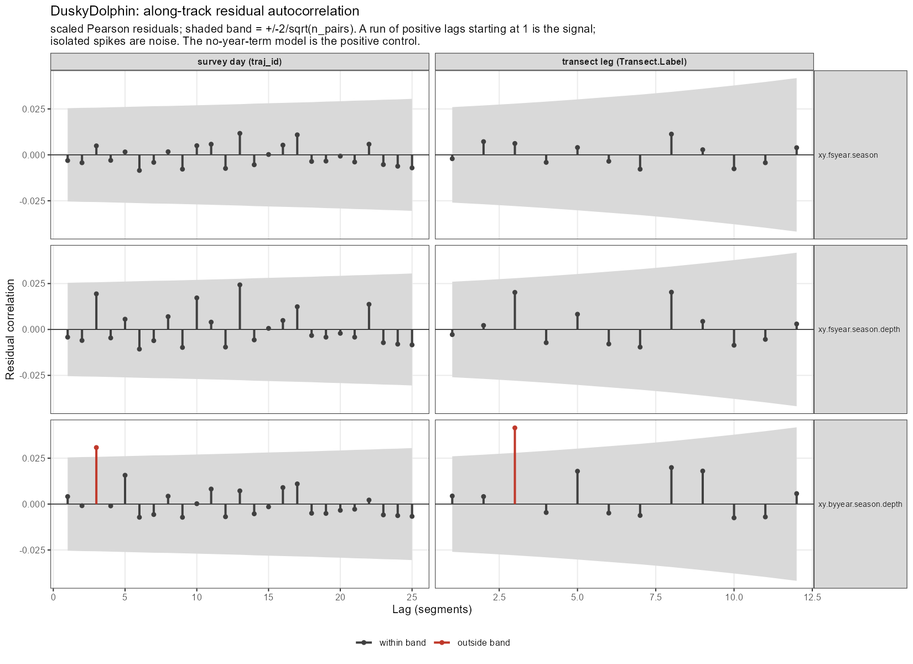
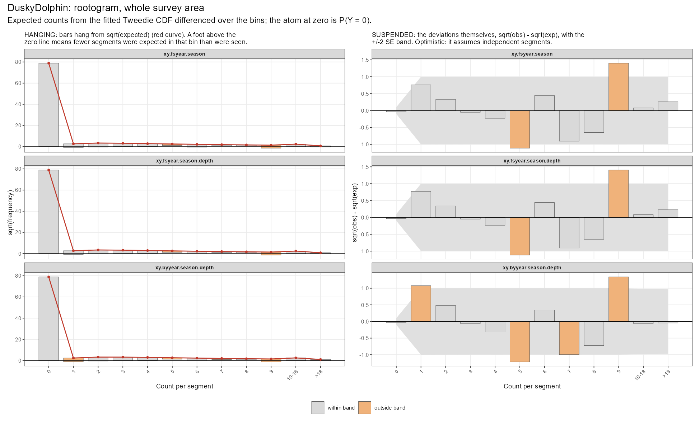
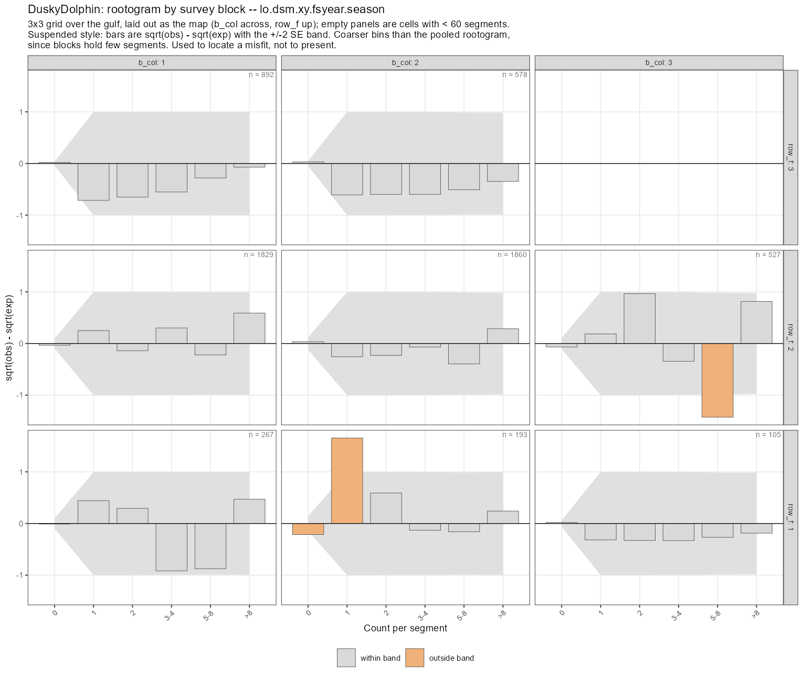

_[pendiente: p.velvert.lo no esta en el workspace]_Delfines Oscuros – secciones pendientes
1 0. EDA: velocidad vertical
La velocidad vertical del agua indica upwellings (velocidades positivas) y downwellings (velocidades negativas). Guillermo calculó promedios climatológicos, es decir medias mensuales, de modo que la variable no tiene dimensión anual. A diferencia de las otras seis covariables ambientales, la velocidad vertical no es una columna de preddata sino un campo que hay que asignar a los segmentos: cada segmento toma el valor de la celda de predicción más cercana dentro de su propio mes calendario.
2 1. Diagnósticos del modelo
Las tablas de selección ordenan los candidatos por AIC, y mgcv lo calcula con la corrección por incertidumbre en los parámetros de suavizado de Wood et al. (2016). Esa corrección es la adecuada, pero no rescata tres supuestos sobre los que el ordenamiento igual descansa: que los segmentos son independientes, que cada suavizado tuvo base suficiente, y que la distribución ajustada produce los conteos que se observaron.
2.1 Autocorrelación residual
Un DSM asume que los residuos de los segmentos son independientes. Los segmentos son tramos contiguos de una misma trayectoria, así que no tienen por qué serlo. Si quedan correlacionados a lo largo de la trayectoria, el tamaño muestral efectivo es menor que el nominal: la abundancia no se sesga mucho, pero los errores estándar se desinflan y las diferencias de AIC se inflan.
| model | scale | lag1 | band | pct_of_band | lag1_within | n_lags_checked | n_lags_outside | lags_outside | max_abs_cor | n_eff_lag1 | n_segments | verdict |
|---|---|---|---|---|---|---|---|---|---|---|---|---|
| lo.dsm.xy.byyear.season.depth | survey day (traj_id) | 0.0041 | 0.0254 | 16 | TRUE | 25 | 1 | 3 | 0.0308 | 6237 | 6288 | pass at lag 1; isolated higher-lag spike(s) |
| lo.dsm.xy.fsyear.season | survey day (traj_id) | -0.0031 | 0.0254 | 12 | TRUE | 25 | 0 | NA | 0.0117 | 6327 | 6288 | pass |
| lo.dsm.xy.fsyear.season.depth | survey day (traj_id) | -0.0042 | 0.0254 | 17 | TRUE | 25 | 0 | NA | 0.0243 | 6341 | 6288 | pass |
| lo.dsm.xy.byyear.season.depth | transect leg (Transect.Label) | 0.0044 | 0.0260 | 17 | TRUE | 12 | 1 | 3 | 0.0415 | 6233 | 6288 | pass at lag 1; isolated higher-lag spike(s) |
| lo.dsm.xy.fsyear.season | transect leg (Transect.Label) | -0.0021 | 0.0260 | 8 | TRUE | 12 | 0 | NA | 0.0113 | 6314 | 6288 | pass |
| lo.dsm.xy.fsyear.season.depth | transect leg (Transect.Label) | -0.0028 | 0.0260 | 11 | TRUE | 12 | 0 | NA | 0.0203 | 6323 | 6288 | pass |

El modelo que el reporte presenta pasa la prueba a las dos escalas, y con margen: la correlación de rezago 1 usa alrededor del 10 % de su banda y es de hecho ligeramente negativa [VERIFICAR TRAS RE-RUN]. El modelo by-year pasa a rezago 1 con un pico aislado a rezago 3, que con una docena de rezagos por modelo es ruido esperable: la señal preocupante es una corrida de correlaciones positivas que arranca en el rezago 1, no una excedencia suelta.
Hay que leer ese resultado con una advertencia, porque acá aplica directamente. Un correlograma plano significa que no hay correlación no modelada, no que no haya correlación. Una superficie espacial que varía por año, que es exactamente lo que es un término fs, puede absorber estructura a lo largo de la trayectoria dentro de la superficie ajustada, y ese es el mismo mecanismo que el sobre-ajuste que se está testeando. Por eso el conjunto diagnosticado incluye siempre un modelo sin término de año como control positivo, y por eso el hallazgo lateral de la sección 4, que todo modelo sin season tiene autocorrelación significativa, es informativo y no anecdótico.
2.2 Dimensión de la base (k.check)
| model | smooth | k_prime | edf | k_index | p_value | edf_frac | near_ceiling | shrunk | low_k_index | flag | k_index_model_wide |
|---|---|---|---|---|---|---|---|---|---|---|---|
| lo.dsm.xy.fsyear.season | s(x,y,year_fac) | 330 | 63.0377777 | 0.8119429 | 0.4100 | 0.191 | FALSE | FALSE | FALSE | FALSE | |
| lo.dsm.xy.fsyear.season.depth | s(x,y,year_fac) | 330 | 56.3418104 | 0.7435560 | 0.0075 | 0.171 | FALSE | FALSE | TRUE | low k-index (see model-wide pattern) | TRUE |
| lo.dsm.xy.fsyear.season.depth | s(depth) | 9 | 3.6649966 | 0.7417130 | 0.0000 | 0.407 | FALSE | FALSE | TRUE | low k-index (see model-wide pattern) | TRUE |
| lo.dsm.xy.byyear.season.depth | s(x,y):year_fac2006 | 29 | 0.0000177 | 0.8445202 | 0.1000 | 0.000 | FALSE | TRUE | FALSE | shrunk to ~0 | FALSE |
| lo.dsm.xy.byyear.season.depth | s(x,y):year_fac2007 | 29 | 1.6698705 | 0.8445202 | 0.1225 | 0.058 | FALSE | FALSE | FALSE | FALSE | |
| lo.dsm.xy.byyear.season.depth | s(x,y):year_fac2008 | 29 | 0.1700443 | 0.8445202 | 0.1175 | 0.006 | FALSE | TRUE | FALSE | shrunk to ~0 | FALSE |
| lo.dsm.xy.byyear.season.depth | s(x,y):year_fac2009 | 29 | 2.7582260 | 0.8445202 | 0.1000 | 0.095 | FALSE | FALSE | FALSE | FALSE | |
| lo.dsm.xy.byyear.season.depth | s(x,y):year_fac2010 | 29 | 0.0038869 | 0.8445202 | 0.1100 | 0.000 | FALSE | TRUE | FALSE | shrunk to ~0 | FALSE |
| lo.dsm.xy.byyear.season.depth | s(x,y):year_fac2013 | 29 | 0.0000173 | 0.8445202 | 0.1075 | 0.000 | FALSE | TRUE | FALSE | shrunk to ~0 | FALSE |
| lo.dsm.xy.byyear.season.depth | s(x,y):year_fac2014 | 29 | 0.8887135 | 0.8445202 | 0.1000 | 0.031 | FALSE | FALSE | FALSE | FALSE | |
| lo.dsm.xy.byyear.season.depth | s(x,y):year_fac2015 | 29 | 0.0026096 | 0.8445202 | 0.0900 | 0.000 | FALSE | TRUE | FALSE | shrunk to ~0 | FALSE |
| lo.dsm.xy.byyear.season.depth | s(x,y):year_fac2016 | 29 | 10.1610818 | 0.8445202 | 0.0900 | 0.350 | FALSE | FALSE | FALSE | FALSE | |
| lo.dsm.xy.byyear.season.depth | s(x,y):year_fac2017 | 29 | 0.0035761 | 0.8445202 | 0.0975 | 0.000 | FALSE | TRUE | FALSE | shrunk to ~0 | FALSE |
| lo.dsm.xy.byyear.season.depth | s(x,y):year_fac2018 | 29 | 0.0000187 | 0.8445202 | 0.1025 | 0.000 | FALSE | TRUE | FALSE | shrunk to ~0 | FALSE |
| lo.dsm.xy.byyear.season.depth | s(depth) | 9 | 5.1251742 | 0.8199038 | 0.0000 | 0.569 | FALSE | FALSE | TRUE | low k-index (see model-wide pattern) | FALSE |
Ningún suavizado de delfines oscuros está apoyado contra su techo. s(x,y,year_fac) sale en 63.0 de k_prime = 330 (edf_frac 0.19) y s(depth) en 3.66 de 9 [VERIFICAR TRAS RE-RUN]. Es decir, la penalización está haciendo el trabajo y la base no ata en ningún término, que es exactamente lo contrario de lo que pasa con delfines comunes, donde s(clo) sale contra su techo en todos los modelos que lo incluyen. Esa diferencia es la que hace interpretable el resultado de la otra especie, y es la razón por la cual el estudio de covariables de la sección 3 se corrió acá también: como control, no porque se esperara que cambiara algo.
El modelo by-year muestra otra cosa que vale la pena señalar: la mitad de sus superficies anuales están encogidas a cero (2006, 2008, 2010, 2013, 2015, 2017, 2018). Es lo esperable en años con pocos datos, y es el argumento estructural a favor del término fs sobre el by-year: el fs comparte información entre años en lugar de estimar cada superficie por separado.
2.3 Rootogramas
El rootograma compara, por cada clase de conteo, el número de segmentos observados con el esperado por el modelo, en escala de raíz cuadrada (Kleiber & Zeileis (2016)).


El rootograma de delfines oscuros es limpio: no hay exceso de ceros ni desajuste en la cola. Ese resultado negativo es el que sostiene todo el análisis de la cola de delfines comunes, y conviene que quede dicho en los dos reportes. La explicación es el tamaño de los grupos: el grupo más grande de delfines oscuros del conjunto de datos es de 11 animales, contra 450 en delfines comunes. Una Tweedie con \(1 < p < 2\) es una Poisson-gamma compuesta y puede ajustar sin problema una distribución de tamaños acotada; no puede ajustar una que se concentra cerca de 4 y a la vez llega a 450. Es decir, la diferencia entre las dos especies no es de calidad de modelo sino de comportamiento gregario.
3 2. Covariables ambientales y dimensión de base
Todo suavizado ambiental de este proyecto se ajustó con el default k = 10 de mgcv, que k.check reporta como k’ = 9 – la columna k_prime de las tablas de arriba – porque la restricción de centrado cuesta un grado de libertad. Una covariable cuyo suavizado se quedó sin base tendría subestimada su contribución, tanto en deviance como en AIC. Para delfines comunes ese problema resultó real. Acá el k.check ya salía limpio, así que la expectativa era que k = 20 no cambiara nada, pero vale confirmarlo en lugar de asumirlo: es el caso control que hace interpretable el resultado de la otra especie.
| covariate | AIC_10 | AIC_20 | dAIC_vs_base_10 | dAIC_vs_base_20 | edf_10 | edf_20 | edf_frac_10 | edf_frac_20 | k_index_10 | k_index_20 | p_value_10 | p_value_20 | at_ceiling_10 | at_ceiling_20 | Dev_10 | Dev_20 |
|---|---|---|---|---|---|---|---|---|---|---|---|---|---|---|---|---|
| depth | 988.26 | 988.36 | -14.31 | -14.21 | 3.66 | 3.81 | 0.407 | 0.200 | 0.785 | 0.791 | 0.010 | 0.013 | FALSE | FALSE | 0.571 | 0.572 |
| VelVert | 991.41 | 991.43 | -11.16 | -11.14 | 1.63 | 1.65 | 0.182 | 0.087 | 0.766 | 0.792 | 0.000 | 0.022 | FALSE | FALSE | 0.559 | 0.559 |
| sst | 996.74 | 996.74 | -5.83 | -5.83 | 1.00 | 1.00 | 0.111 | 0.053 | 0.708 | 0.758 | 0.000 | 0.000 | FALSE | FALSE | 0.578 | 0.578 |
| slope | 1000.61 | 1000.64 | -1.96 | -1.93 | 1.00 | 1.00 | 0.111 | 0.053 | 0.785 | 0.825 | 0.002 | 0.158 | FALSE | FALSE | 0.557 | 0.557 |
| clo | 1005.04 | 1002.90 | 2.47 | 0.33 | 1.00 | 5.77 | 0.111 | 0.304 | 0.792 | 0.741 | 0.005 | 0.000 | FALSE | FALSE | 0.551 | 0.575 |
| dist.up | 1005.60 | 1005.73 | 3.03 | 3.16 | 1.00 | 1.00 | 0.111 | 0.053 | 0.805 | 0.768 | 0.098 | 0.007 | FALSE | FALSE | 0.527 | 0.527 |
| grad | 1008.83 | 1009.18 | 6.26 | 6.61 | 2.19 | 2.30 | 0.244 | 0.121 | 0.746 | 0.738 | 0.000 | 0.000 | FALSE | FALSE | 0.537 | 0.538 |
| covariate | k | lag1_transect | band_transect | sig_transect | lag1_day | band_day | sig_day |
|---|---|---|---|---|---|---|---|
| (base, no covariate) | NA | -0.0021 | 0.026 | FALSE | -0.0031 | 0.0254 | FALSE |
| slope | 20 | -0.0034 | 0.026 | FALSE | -0.0040 | 0.0254 | FALSE |
| grad | 20 | 0.0015 | 0.026 | FALSE | 0.0004 | 0.0254 | FALSE |
| sst | 20 | -0.0052 | 0.026 | FALSE | -0.0063 | 0.0254 | FALSE |
| clo | 20 | -0.0039 | 0.026 | FALSE | -0.0048 | 0.0254 | FALSE |
| dist.up | 20 | 0.0011 | 0.026 | FALSE | 0.0000 | 0.0254 | FALSE |
| depth | 20 | -0.0028 | 0.026 | FALSE | -0.0042 | 0.0254 | FALSE |
| VelVert | 20 | -0.0017 | 0.026 | FALSE | -0.0022 | 0.0254 | FALSE |
k = 20 no cambia nada. Las siete covariables se mueven por décimas de unidad de AIC y sus edf quedan donde estaban: s(depth) pasa de 3.66 a 3.81, s(sst) y s(clo) salen en 1.00 en las dos bases, y ninguna se acerca a su techo [VERIFICAR TRAS RE-RUN]. La única que se mueve es s(clo), de 1.00 a 5.77 edf, y aun así sigue sin ganarle al modelo base.
La consecuencia para el reporte es que descartar las covariables ambientales en delfines oscuros está bien sostenido, y por un argumento más fuerte que el de la deviance. s(depth) sigue valiendo del orden de 14 unidades de AIC en las dos bases, así que no es que no aporte nada; lo que pasa es que aporta alrededor de 1.5 puntos de deviance, y esa es la cuenta relevante. La diferencia con delfines comunes es real: ahí la ventaja de las covariables crecía al liberar la base, acá no.
4 3. La película soap: se revisó y no se cambió nada
El arm soap no es el modelo que el reporte de delfines oscuros presenta: el modelo presentado es el factor-smooth, lo.dsm.xy.fsyear.season, y esa asimetría con delfines comunes es deliberada. Aun así el arm soap se sintonizó, por dos razones. Primero, el arm soap de delfines comunes acaba de ser sintonizado y adoptado; dejar el de delfines oscuros sin revisar mientras se presentan los dos en el mismo reporte significa que los bloques soap de las dos especies dejan de ser comparables, y un lector no puede distinguir si una diferencia entre especies es biología o resolución de base. Segundo, la diferencia de AIC entre el arm fs y el arm soap es parte del motivo por el cual se eligió fs para esta especie; si sintonizar moviera el arm soap de manera apreciable, esa elección merecería reexaminarse en lugar de heredarse.
El resultado es que no se adoptó nada. Los tres controles dieron negativo, y por motivos concretos y verificables.
| tol | margin | stored | buffer_out | vertices | area_km2 | pct_larger | seg_outside | seg_within_2km | min_dist_m | usable |
|---|---|---|---|---|---|---|---|---|---|---|
| 3000 | 2000 | TRUE | 2912 | 9 | 2184.6 | 20.6 | 0 | 44 | 827 | TRUE |
| 3000 | 250 | FALSE | 1162 | 9 | 1880.4 | 3.8 | 32 | 337 | 2 | FALSE |
| 500 | 2000 | FALSE | 2912 | 22 | 2348.7 | 29.7 | 0 | 2 | 1928 | TRUE |
| 500 | 250 | FALSE | 1162 | 19 | 2012.0 | 11.1 | 0 | 247 | 230 | TRUE |
| tol | margin | ngrid | n_knots | AIC | df | edf_xy | k_prime_xy | edf_frac_xy | lag1 | lag1_band | lag1_sig | Dev | edf_gain | knot_gain | edf_per_10knots | lag1_ok |
|---|---|---|---|---|---|---|---|---|---|---|---|---|---|---|---|---|
| 500 | 250 | 10x8 | 41 | 1012.51 | 33.24 | 15.94 | 49 | 0.325 | 0.0145 | 0.026 | FALSE | 0.386 | NA | NA | NA | TRUE |
| 500 | 250 | 12x9 | 60 | 1015.94 | 34.23 | 16.96 | 68 | 0.249 | 0.0189 | 0.026 | FALSE | 0.385 | 1.02 | 19 | 0.54 | TRUE |
| 500 | 250 | 14x11 | 89 | 1011.40 | 37.81 | 20.27 | 97 | 0.209 | 0.0153 | 0.026 | FALSE | 0.406 | 3.31 | 29 | 1.14 | TRUE |
| 500 | 250 | 16x13 | 125 | 1009.33 | 41.11 | 23.19 | 133 | 0.174 | 0.0143 | 0.026 | FALSE | 0.422 | 2.92 | 36 | 0.81 | TRUE |
| 500 | 250 | 18x14 | 156 | 1012.32 | 41.36 | 23.12 | 164 | 0.141 | 0.0145 | 0.026 | FALSE | 0.418 | -0.07 | 31 | -0.02 | TRUE |
| 500 | 250 | 20x16 | 204 | 1009.94 | 44.34 | 25.74 | 212 | 0.121 | 0.0132 | 0.026 | FALSE | 0.433 | 2.62 | 48 | 0.55 | TRUE |
| 500 | 2000 | 10x8 | 41 | 1007.49 | 29.98 | 15.43 | 49 | 0.315 | 0.0154 | 0.026 | FALSE | 0.384 | NA | NA | NA | TRUE |
| 500 | 2000 | 12x9 | 60 | 1016.68 | 33.90 | 16.40 | 68 | 0.241 | 0.0195 | 0.026 | FALSE | 0.382 | 0.97 | 19 | 0.51 | TRUE |
| 500 | 2000 | 14x11 | 91 | 1011.66 | 35.32 | 18.97 | 99 | 0.192 | 0.0161 | 0.026 | FALSE | 0.397 | 2.57 | 31 | 0.83 | TRUE |
| 500 | 2000 | 16x13 | 127 | 1004.83 | 36.54 | 21.75 | 135 | 0.161 | 0.0156 | 0.026 | FALSE | 0.414 | 2.78 | 36 | 0.77 | TRUE |
| 500 | 2000 | 18x14 | 160 | 1006.06 | 37.74 | 22.61 | 168 | 0.135 | 0.0144 | 0.026 | FALSE | 0.416 | 0.86 | 33 | 0.26 | TRUE |
| 500 | 2000 | 20x16 | 206 | 1007.75 | 39.13 | 23.37 | 214 | 0.109 | 0.0146 | 0.026 | FALSE | 0.419 | 0.76 | 46 | 0.17 | TRUE |
| 3000 | 2000 | 10x8 | 40 | 1005.11 | 30.42 | 16.06 | 48 | 0.335 | 0.0133 | 0.026 | FALSE | 0.390 | NA | NA | NA | TRUE |
| 3000 | 2000 | 12x9 | 59 | 1017.86 | 33.37 | 16.04 | 67 | 0.239 | 0.0210 | 0.026 | FALSE | 0.378 | -0.02 | 19 | -0.01 | TRUE |
| 3000 | 2000 | 14x11 | 90 | 1009.43 | 34.50 | 19.23 | 98 | 0.196 | 0.0166 | 0.026 | FALSE | 0.398 | 3.19 | 31 | 1.03 | TRUE |
| 3000 | 2000 | 16x13 | 126 | 1005.64 | 36.63 | 21.76 | 134 | 0.162 | 0.0158 | 0.026 | FALSE | 0.413 | 2.53 | 36 | 0.70 | TRUE |
| 3000 | 2000 | 18x14 | 156 | 1005.42 | 38.48 | 23.27 | 164 | 0.142 | 0.0140 | 0.026 | FALSE | 0.420 | 1.51 | 30 | 0.50 | TRUE |
| 3000 | 2000 | 20x16 | 200 | 1004.97 | 40.14 | 24.67 | 208 | 0.119 | 0.0139 | 0.026 | FALSE | 0.427 | 1.40 | 44 | 0.32 | TRUE |
| 3000 | 2000 | 23x18 | 267 | 1003.61 | 42.71 | 27.05 | 275 | 0.098 | 0.0130 | 0.026 | FALSE | 0.439 | 2.38 | 67 | 0.36 | TRUE |
| 3000 | 2000 | 26x21 | 361 | 1002.05 | 45.17 | 29.29 | 369 | 0.079 | 0.0131 | 0.026 | FALSE | 0.450 | 2.24 | 94 | 0.24 | TRUE |
| arm | model | name | env | df | AIC | deltaAIC | deltaAIC_spec | Dev | n | p_hat | edf_xy | k_prime_xy | edf_frac_xy | edf_env | k_prime_env | edf_frac_env | lag1 | lag1_band | lag1_sig |
|---|---|---|---|---|---|---|---|---|---|---|---|---|---|---|---|---|---|---|---|
| tuned | count ~ s(x,y,so) + s(Ano) + s(sst) | lo.dsm.soap.year.sst | sst | 35.95 | 1003.92 | 0.00 | 0.00 | 0.416 | 6288 | 1.3173 | 14.41 | 49 | 0.294 | 11.88 | 19 | 0.625 | 0.0371 | 0.026 | TRUE |
| original | count ~ s(x,y,so) + season + s(Ano) + s(sst) | lo.dsm.soap.year.season.sst | sst | 31.51 | 1004.77 | 0.85 | 0.00 | 0.395 | 6288 | 1.3121 | 16.26 | 48 | 0.339 | 1.00 | 9 | 0.111 | 0.0123 | 0.026 | FALSE |
| original | count ~ s(x,y,so) + season + s(Ano) | lo.dsm.soap.season.year | 30.42 | 1005.11 | 1.19 | 0.34 | 0.390 | 6288 | 1.3128 | 16.06 | 48 | 0.335 | NA | NA | NA | 0.0133 | 0.026 | FALSE | |
| original | count ~ s(x,y,so) + season + s(Ano) + s(clo) | lo.dsm.soap.year.season.clo | clo | 31.22 | 1006.75 | 2.83 | 1.98 | 0.390 | 6288 | 1.3135 | 15.77 | 48 | 0.328 | 1.00 | 9 | 0.111 | 0.0127 | 0.026 | FALSE |
| original | count ~ s(x,y,so) + season + s(Ano) + s(depth) | lo.dsm.soap.year.season.depth | depth | 36.16 | 1007.02 | 3.10 | 2.25 | 0.409 | 6288 | 1.3135 | 14.83 | 48 | 0.309 | 3.09 | 9 | 0.344 | 0.0231 | 0.026 | FALSE |
| tuned | count ~ s(x,y,so) + season + s(Ano) + s(depth) | lo.dsm.soap.year.season.depth | depth | 35.62 | 1008.26 | 4.34 | 4.34 | 0.405 | 6288 | 1.3153 | 14.56 | 49 | 0.297 | 3.15 | 19 | 0.166 | 0.0256 | 0.026 | FALSE |
| original | count ~ s(x,y,so) + season + s(Ano) + s(grad) | lo.dsm.soap.year.season.grad | grad | 32.81 | 1008.27 | 4.35 | 3.50 | 0.394 | 6288 | 1.3147 | 15.02 | 48 | 0.313 | 2.06 | 9 | 0.229 | 0.0141 | 0.026 | FALSE |
| original | count ~ s(x,y,so) + season + s(Ano) + s(VelVert) | lo.dsm.soap.year.season.VelVert | VelVert | 33.28 | 1008.76 | 4.84 | 3.99 | 0.391 | 6288 | 1.3044 | 14.50 | 48 | 0.302 | 1.71 | 9 | 0.190 | 0.0096 | 0.026 | FALSE |
| tuned | count ~ s(x,y,so) + season + s(Ano) + s(grad) | lo.dsm.soap.year.season.grad | grad | 32.66 | 1009.82 | 5.90 | 5.90 | 0.390 | 6288 | 1.3154 | 14.71 | 49 | 0.300 | 2.15 | 19 | 0.113 | 0.0150 | 0.026 | FALSE |
| tuned | count ~ s(x,y,so) + season + s(Ano) + s(sst) | lo.dsm.soap.year.season.sst | sst | 34.07 | 1011.59 | 7.67 | 7.67 | 0.392 | 6288 | 1.3133 | 16.18 | 49 | 0.330 | 1.00 | 19 | 0.053 | 0.0135 | 0.026 | FALSE |
| original | count ~ s(x,y,so) + season + s(Ano) + s(slope) | lo.dsm.soap.year.season.slope | slope | 34.22 | 1011.85 | 7.93 | 7.08 | 0.391 | 6288 | 1.3118 | 14.20 | 48 | 0.296 | 2.23 | 9 | 0.247 | 0.0120 | 0.026 | FALSE |
| tuned | count ~ s(x,y,so) + season + s(Ano) + s(VelVert) | lo.dsm.soap.year.season.VelVert | VelVert | 33.94 | 1011.89 | 7.97 | 7.97 | 0.388 | 6288 | 1.3058 | 14.26 | 49 | 0.291 | 1.71 | 19 | 0.090 | 0.0106 | 0.026 | FALSE |
| tuned | count ~ s(x,y,so) + season + s(Ano) | lo.dsm.soap.season.year | 33.24 | 1012.51 | 8.59 | 8.59 | 0.386 | 6288 | 1.3138 | 15.94 | 49 | 0.325 | NA | NA | NA | 0.0145 | 0.026 | FALSE | |
| tuned | count ~ s(x,y,so) + season + s(Ano) + s(slope) | lo.dsm.soap.year.season.slope | slope | 34.09 | 1013.88 | 9.96 | 9.96 | 0.387 | 6288 | 1.3133 | 13.79 | 49 | 0.281 | 2.36 | 19 | 0.124 | 0.0135 | 0.026 | FALSE |
| tuned | count ~ s(x,y,so) + season + s(Ano) + s(clo) | lo.dsm.soap.year.season.clo | clo | 34.22 | 1014.63 | 10.71 | 10.71 | 0.386 | 6288 | 1.3143 | 15.54 | 49 | 0.317 | 1.00 | 19 | 0.053 | 0.0137 | 0.026 | FALSE |
| original | count ~ s(x,y,so) + season + s(depth) | lo.dsm.soap.season.depth | depth | 29.00 | 1019.21 | 15.29 | 14.44 | 0.356 | 6288 | 1.3193 | 14.22 | 48 | 0.296 | 3.10 | 9 | 0.345 | 0.0335 | 0.026 | TRUE |
| original | count ~ s(x,y,so) + season | lo.dsm.soap.season | 23.79 | 1019.27 | 15.35 | 14.50 | 0.334 | 6288 | 1.3195 | 15.35 | 48 | 0.320 | NA | NA | NA | 0.0214 | 0.026 | FALSE | |
| original | count ~ s(x,y,so) + season + s(clo) | lo.dsm.soap.season.clo | clo | 24.48 | 1020.96 | 17.04 | 16.19 | 0.334 | 6288 | 1.3205 | 15.25 | 48 | 0.318 | 1.00 | 9 | 0.111 | 0.0213 | 0.026 | FALSE |
| original | count ~ s(x,y,so) + season + s(sst) | lo.dsm.soap.season.sst | sst | 24.83 | 1021.11 | 17.19 | 16.34 | 0.335 | 6288 | 1.3203 | 15.38 | 48 | 0.320 | 1.00 | 9 | 0.112 | 0.0216 | 0.026 | FALSE |
| original | count ~ s(x,y,so) + season + s(grad) | lo.dsm.soap.season.grad | grad | 25.92 | 1021.17 | 17.25 | 16.40 | 0.340 | 6288 | 1.3219 | 14.06 | 48 | 0.293 | 2.17 | 9 | 0.241 | 0.0219 | 0.026 | FALSE |
| tuned | count ~ s(x,y,so) + season + s(depth) | lo.dsm.soap.season.depth | depth | 28.73 | 1021.54 | 17.62 | 17.62 | 0.351 | 6288 | 1.3207 | 13.80 | 49 | 0.282 | 3.15 | 19 | 0.166 | 0.0366 | 0.026 | TRUE |
| original | count ~ s(x,y,so) + season + s(VelVert) | lo.dsm.soap.season.VelVert | VelVert | 26.41 | 1022.06 | 18.14 | 17.29 | 0.337 | 6288 | 1.3131 | 13.66 | 48 | 0.285 | 1.52 | 9 | 0.169 | 0.0150 | 0.026 | FALSE |
| tuned | count ~ s(x,y,so) + season + s(grad) | lo.dsm.soap.season.grad | grad | 25.94 | 1023.18 | 19.26 | 19.26 | 0.336 | 6288 | 1.3224 | 13.69 | 49 | 0.279 | 2.30 | 19 | 0.121 | 0.0233 | 0.026 | FALSE |
| tuned | count ~ s(x,y,so) + season + s(Ano) + s(dist.up) | lo.dsm.soap.year.season.dist.up | dist.up | 16.42 | 1023.47 | 19.55 | 19.55 | 0.295 | 6288 | 1.3328 | 2.26 | 49 | 0.046 | 1.03 | 19 | 0.054 | 0.0301 | 0.026 | TRUE |
| tuned | count ~ s(x,y,so) + season + s(VelVert) | lo.dsm.soap.season.VelVert | VelVert | 25.89 | 1023.77 | 19.85 | 19.85 | 0.332 | 6288 | 1.3146 | 13.11 | 49 | 0.268 | 1.51 | 19 | 0.080 | 0.0166 | 0.026 | FALSE |
| original | count ~ s(x,y,so) + season + s(Ano) + s(dist.up) | lo.dsm.soap.year.season.dist.up | dist.up | 16.44 | 1023.82 | 19.90 | 19.05 | 0.294 | 6288 | 1.3328 | 2.24 | 48 | 0.047 | 1.07 | 9 | 0.119 | 0.0308 | 0.026 | TRUE |
| original | count ~ s(x,y,so) + season + s(slope) | lo.dsm.soap.season.slope | slope | 26.61 | 1024.22 | 20.30 | 19.45 | 0.336 | 6288 | 1.3200 | 12.67 | 48 | 0.264 | 2.71 | 9 | 0.301 | 0.0200 | 0.026 | FALSE |
| original | count ~ s(x,y,so) + season + s(dist.up) | lo.dsm.soap.season.dist.up | dist.up | 27.34 | 1025.35 | 21.43 | 20.58 | 0.337 | 6288 | 1.3208 | 15.33 | 48 | 0.319 | 1.00 | 9 | 0.111 | 0.0204 | 0.026 | FALSE |
| tuned | count ~ s(x,y,so) + season + s(slope) | lo.dsm.soap.season.slope | slope | 26.10 | 1025.94 | 22.02 | 22.02 | 0.330 | 6288 | 1.3213 | 12.04 | 49 | 0.246 | 2.80 | 19 | 0.147 | 0.0217 | 0.026 | FALSE |
| tuned | count ~ s(x,y,so) + season | lo.dsm.soap.season | 26.25 | 1026.25 | 22.33 | 22.33 | 0.330 | 6288 | 1.3204 | 15.15 | 49 | 0.309 | NA | NA | NA | 0.0235 | 0.026 | FALSE | |
| tuned | count ~ s(x,y,so) + season + s(dist.up) | lo.dsm.soap.season.dist.up | dist.up | 26.86 | 1026.97 | 23.05 | 23.05 | 0.331 | 6288 | 1.3221 | 14.97 | 49 | 0.305 | 1.00 | 19 | 0.053 | 0.0228 | 0.026 | FALSE |
| tuned | count ~ s(x,y,so) + season + s(sst) | lo.dsm.soap.season.sst | sst | 27.35 | 1028.20 | 24.28 | 24.28 | 0.331 | 6288 | 1.3212 | 15.18 | 49 | 0.310 | 1.03 | 19 | 0.054 | 0.0236 | 0.026 | FALSE |
| tuned | count ~ s(x,y,so) + season + s(clo) | lo.dsm.soap.season.clo | clo | 27.13 | 1028.33 | 24.41 | 24.41 | 0.329 | 6288 | 1.3213 | 15.03 | 49 | 0.307 | 1.00 | 19 | 0.053 | 0.0233 | 0.026 | FALSE |
| original | count ~ s(x,y,so) + s(Ano) + s(sst) | lo.dsm.soap.year.sst | sst | 30.69 | 1042.18 | 38.26 | 37.41 | 0.320 | 6288 | 1.3377 | 16.44 | 48 | 0.342 | 5.64 | 9 | 0.627 | 0.0533 | 0.026 | TRUE |
| original | count ~ s(x,y,so) + s(Ano) + s(VelVert) | lo.dsm.soap.year.VelVert | VelVert | 28.16 | 1054.85 | 50.93 | 50.08 | 0.276 | 6288 | 1.3290 | 17.31 | 48 | 0.361 | 1.33 | 9 | 0.148 | 0.0553 | 0.026 | TRUE |
| tuned | count ~ s(x,y,so) + s(Ano) + s(VelVert) | lo.dsm.soap.year.VelVert | VelVert | 28.18 | 1056.20 | 52.28 | 52.28 | 0.273 | 6288 | 1.3297 | 17.20 | 49 | 0.351 | 1.31 | 19 | 0.069 | 0.0571 | 0.026 | TRUE |
| original | count ~ s(x,y,so) + s(Ano) + s(dist.up) | lo.dsm.soap.year.dist.up | dist.up | 29.15 | 1060.39 | 56.47 | 55.62 | 0.269 | 6288 | 1.3347 | 17.92 | 48 | 0.373 | 1.61 | 9 | 0.179 | 0.0621 | 0.026 | TRUE |
| original | count ~ s(x,y,so) + s(Ano) + s(grad) | lo.dsm.soap.year.grad | grad | 27.17 | 1060.47 | 56.55 | 55.70 | 0.261 | 6288 | 1.3377 | 16.75 | 48 | 0.349 | 2.29 | 9 | 0.255 | 0.0785 | 0.026 | TRUE |
| tuned | count ~ s(x,y,so) + s(Ano) + s(dist.up) | lo.dsm.soap.year.dist.up | dist.up | 28.75 | 1061.04 | 57.12 | 57.12 | 0.266 | 6288 | 1.3353 | 17.85 | 49 | 0.364 | 1.57 | 19 | 0.082 | 0.0645 | 0.026 | TRUE |
| tuned | count ~ s(x,y,so) | lo.dsm.soap | 24.36 | 1061.48 | 57.56 | 57.56 | 0.244 | 6288 | 1.3368 | 17.40 | 49 | 0.355 | NA | NA | NA | 0.0756 | 0.026 | TRUE | |
| original | count ~ s(x,y,so) + s(Ano) + s(depth) | lo.dsm.soap.year.depth | depth | 28.95 | 1062.49 | 58.57 | 57.72 | 0.263 | 6288 | 1.3328 | 16.30 | 48 | 0.340 | 2.83 | 9 | 0.314 | 0.0649 | 0.026 | TRUE |
| original | count ~ s(x,y,so) | lo.dsm.soap | 25.59 | 1062.88 | 58.96 | 58.11 | 0.247 | 6288 | 1.3366 | 17.42 | 48 | 0.363 | NA | NA | NA | 0.0734 | 0.026 | TRUE | |
| tuned | count ~ s(x,y,so) + s(Ano) + s(depth) | lo.dsm.soap.year.depth | depth | 28.40 | 1063.00 | 59.08 | 59.08 | 0.259 | 6288 | 1.3337 | 16.30 | 49 | 0.333 | 2.81 | 19 | 0.148 | 0.0680 | 0.026 | TRUE |
| tuned | count ~ s(x,y,so) + s(Ano) | lo.dsm.soap.year | 25.31 | 1063.48 | 59.56 | 59.56 | 0.244 | 6288 | 1.3381 | 17.38 | 49 | 0.355 | NA | NA | NA | 0.0756 | 0.026 | TRUE | |
| tuned | count ~ s(x,y,so) + s(Ano) + s(slope) | lo.dsm.soap.year.slope | slope | 25.42 | 1064.81 | 60.89 | 60.89 | 0.241 | 6288 | 1.3370 | 16.00 | 49 | 0.327 | 1.00 | 19 | 0.053 | 0.0593 | 0.026 | TRUE |
| original | count ~ s(x,y,so) + s(Ano) | lo.dsm.soap.year | 26.58 | 1064.94 | 61.02 | 60.17 | 0.247 | 6288 | 1.3378 | 17.41 | 48 | 0.363 | NA | NA | NA | 0.0734 | 0.026 | TRUE | |
| original | count ~ s(x,y,so) + s(Ano) + s(slope) | lo.dsm.soap.year.slope | slope | 26.22 | 1065.04 | 61.12 | 60.27 | 0.244 | 6288 | 1.3364 | 16.13 | 48 | 0.336 | 1.00 | 9 | 0.111 | 0.0575 | 0.026 | TRUE |
| tuned | count ~ s(x,y,so) + s(Ano) + s(grad) | lo.dsm.soap.year.grad | grad | 28.87 | 1065.08 | 61.16 | 61.16 | 0.258 | 6288 | 1.3384 | 16.73 | 49 | 0.342 | 2.47 | 19 | 0.130 | 0.0813 | 0.026 | TRUE |
| tuned | count ~ s(x,y,so) + s(Ano) + s(clo) | lo.dsm.soap.year.clo | clo | 26.48 | 1066.52 | 62.60 | 62.60 | 0.243 | 6288 | 1.3391 | 17.13 | 49 | 0.350 | 1.00 | 19 | 0.053 | 0.0728 | 0.026 | TRUE |
| original | count ~ s(x,y,so) + s(Ano) + s(clo) | lo.dsm.soap.year.clo | clo | 27.29 | 1067.07 | 63.15 | 62.30 | 0.245 | 6288 | 1.3389 | 17.14 | 48 | 0.357 | 1.00 | 9 | 0.111 | 0.0703 | 0.026 | TRUE |
Grilla de nudos: la base espacial nunca ató. edf_frac_xy es 0.335 en la configuración guardada (16.06 de 48), contra 0.64 en el arm de delfines comunes que sí necesitó arreglo. A lo largo del barrido completo edf_xy sube apenas de 15.9 a 29.3 mientras k_prime va de 49 a 369: la penalización está haciendo el trabajo, no el techo de la base. No hay acá un defecto que reparar. Como evidencia de apoyo, las 20 configuraciones del barrido abarcan 15.8 unidades de AIC, cuando el refinamiento de grilla de delfines comunes valía 24 él solo, y el AIC es no monótono en el número de nudos: 12x9 es peor que 10x8 en los tres bordes, por 3.4, 9.2 y 12.8. Una base penalizada más fina no puede ajustar genuinamente peor, así que esa dispersión es REML aterrizando distinto, y fija el piso de ruido para todo lo demás en la tabla.
Base de las covariables: k = 10 tampoco era la restricción, y los edf lo dicen directamente. Duplicar k a 20 mueve cada suavizado ambiental prácticamente nada: depth 3.09 a 3.15, grad 2.06 a 2.15, slope 2.23 a 2.36, VelVert 1.71 a 1.71, sst y clo 1.00 a 1.00. Las ganancias aparentes dentro del arm a k = 20, depth +4.25 y grad +2.69, no son la base: depth se mueve 6 unidades de AIC mientras su edf se mueve 0.06. Eso es ruido del tamaño que el barrido de nudos ya había medido.
Borde: tol500/margin250 cuesta 7.32 unidades de AIC sobre el modelo presentado (1005.19 contra 1012.51). El AIC no puede realmente adjudicar esto, porque 7.32 cae adentro de la oscilación de 12.8 unidades, pero es consistentemente negativo a través de las grillas, entre 3.7 y 7.4, y el único argumento a favor es la prolijidad geométrica. Esto es lo opuesto al resultado de delfines comunes, donde el borde más ajustado valía alrededor de 6 unidades: las dos especies quedan en bordes distintos a propósito, cada una sobre su propia evidencia.
De modo que 4_DuskyDolphin_DSM_soap.R conserva 3000/2000/10x8 y k = 10. El único cambio que recibió ese arm es la corrección de bnd_dist(), que medía la distancia de los nudos a los vértices del borde en lugar de a sus aristas. Ese error es latente a 10x8 pero se dispara apenas se refina la grilla, así que se corrigió antes de sintonizar. Vale 0.08 unidades de AIC y cambia el conteo de nudos conservados de 41 a 40.
4.1 Hallazgo lateral: season no es opcional
Vale más que la sintonización misma, y conviene sacarlo del bloque de sintonización y ponerlo junto a la tabla de selección de modelos. Todo modelo que descarta season tiene autocorrelación residual significativa (lag-1 entre 0.030 y 0.081 contra una banda de 0.026), y todo modelo que la conserva sale limpio (0.010 a 0.026). Eso incluye al ganador nominal por AIC de toda la tabla, count ~ s(x,y,bs="so") + s(Ano) + s(sst) con AIC 1003.92, que por lo tanto no es un modelo defendible: la independencia residual que su propio AIC asume no se cumple. La estación está haciendo trabajo real acá, y el ordenamiento debe leerse con lag1_sig y no sólo con AIC.
5 4. CORRECCIÓN a secciones ya publicadas: el offset de los mapas
Todos los mapas de densidad predecían con off.set = 800 * trunc.dist_lo, una constante, y después dividían por el área de la celda. Una predicción hecha con un offset constante no depende del área de la celda, así que esa división no convertía nada: sólo reescalaba. Las leyendas de los mapas de densidad de delfines oscuros estaban 3.25 veces por debajo (4.49 en delfines comunes). El patrón espacial sobrevivió casi intacto, porque el factor varía alrededor de un 7 % entre celdas, pero la escala no.
5_DuskyDolphin_Abundance.R ya usaba el área de la celda y siempre estuvo bien, de modo que ninguna cifra de abundancia del reporte está afectada: sólo las leyendas de los mapas.
6 5. Por qué esta especie tiene menos diagnósticos que la otra
El reporte de delfines comunes lleva cuatro estudios que éste no tiene: el rootograma contra la grilla de nudos, el estudio de la cola, el impacto del desajuste de la cola sobre las estimaciones, y el arm soap sintonizado con sus mapas y su serie de abundancia. La asimetría es un resultado y no una omisión, y se explica en una línea por estudio.
- No hay estudio de rootograma contra grilla de nudos porque el rootograma de delfines oscuros no tiene desajuste que atribuir. Ese estudio existe para separar un defecto de base de un defecto de modelo, y acá no hay ninguno de los dos.
- No hay estudio de la cola porque la cola ajusta. El grupo más grande de delfines oscuros del conjunto de datos es de 11 animales, contra 450 en delfines comunes, de modo que una sola gamma alcanza para describir la distribución de tamaños.
- No hay análisis de impacto sobre las estimaciones porque no hay desajuste cuyo impacto medir. Los intervalos de confianza de delfines oscuros se reportan como los da el modelo, sin la advertencia de inflación que corresponde a la otra especie.
- No hay arm soap sintonizado porque la sintonización se corrió y dio negativo en los tres controles (sección 3). Que el estudio se haya corrido y no haya adoptado nada es en sí mismo el resultado, y por eso el script sigue en el driver: es la evidencia de que el arm fue revisado y dejado como estaba deliberadamente.
Dicho al revés, y es el modo en que conviene que aparezca en el manuscrito: el modelo de delfines oscuros pasa todos los diagnósticos que el de delfines comunes no pasa. Las dos especies se ajustaron con el mismo código, la misma área, los mismos 6288 segmentos y la misma familia de distribuciones. Las diferencias de calidad de ajuste entre las dos no son diferencias de método, son diferencias de comportamiento gregario.
7 6. Qué queda pendiente
- El bloque considerado para esta especie es el fs y no el soap. Esa elección está sostenida por la biología, porque los delfines oscuros mueven sus áreas de agregación entre años, y por el AIC. Conviene que quede dicho explícitamente en el reporte, porque el lector que compare los dos documentos va a encontrar que la otra especie se presenta con soap.
seasonno puede omitirse. El hallazgo de la sección 3 es un criterio de selección, no una curiosidad, y debería aparecer junto a la tabla de selección de modelos y no sólo en el bloque de sintonización.- La configuración soap de las dos especies difiere a propósito. Al presentarlas en el mismo reporte hay que decir que el borde y la grilla de cada una salen de su propia evidencia, y no de un default compartido.
- Los diagnósticos de esta especie no fueron re-corridos desde la corrección de
bnd_dist()al momento de escribir este borrador. El paso 7 del runbook los rehace; la expectativa es que no se muevan, porque la corrección vale 0.08 unidades de AIC, pero conviene confirmarlo y no asumirlo.
8 Referencias
Kleiber C, Zeileis A (2016) Visualizing Count Data Regressions Using Rootograms. The American Statistician 70:296–303.
Wood SN, Pya N, Säfken B (2016) Smoothing Parameter and Model Selection for General Smooth Models. Journal of the American Statistical Association 111:1548–1563.